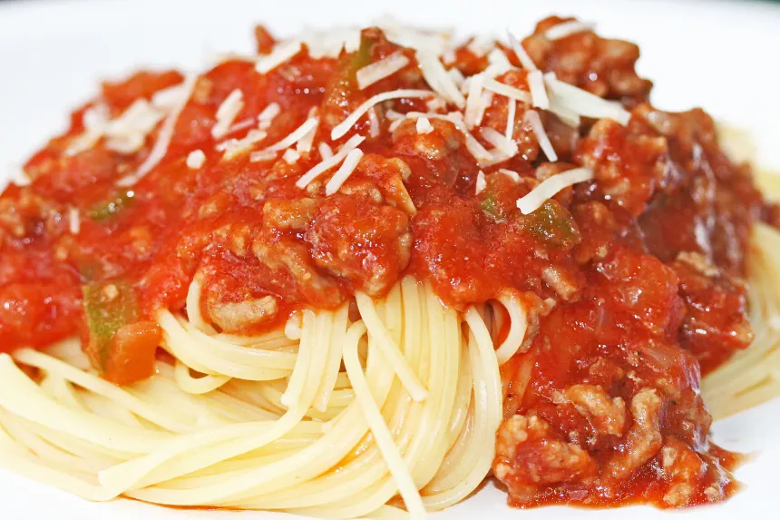

spaghetti

Description
Family favorite
Easy to cook
- small onion
- bell pepper
- tbsp garlic powder
- tbsp butter
- tbsp salt
- tbsp pepper
- cans tomato sauce
- box spaghetti
- hamburger meat
- On medium heat melt the butter and sautee the onion and bell peppers.
- Add the hamburger meat and cook until meat is well done.
- Add the tomato sauce, salt, pepper and garlic powder.
- Salt, pepper and garlic powder can be adjusted to your own tastes.
- Cook noodles as directed.
- Mix the sauce and noodles if you like, I keep them separated.